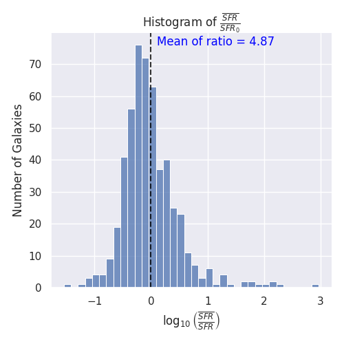
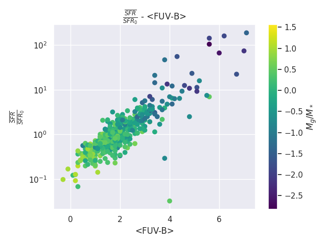
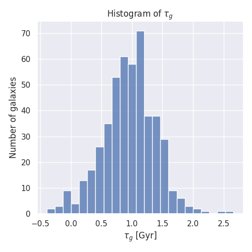
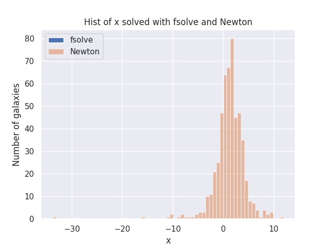
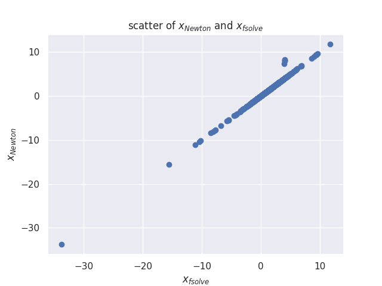
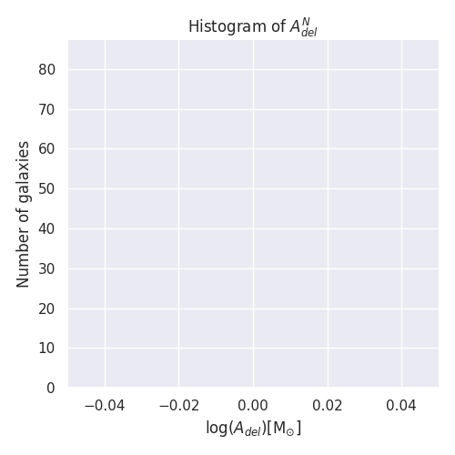
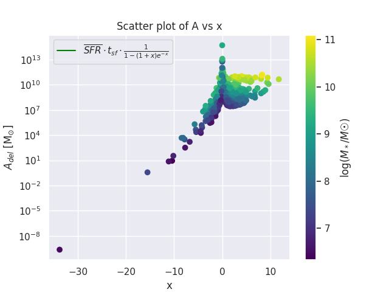
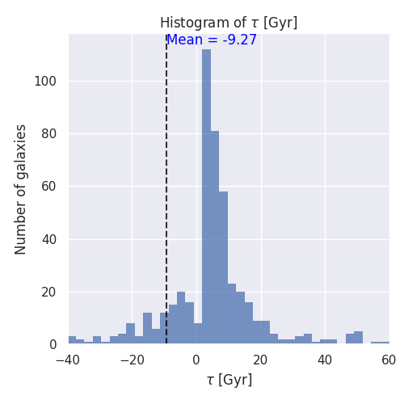

Investigations of the galaxies in the LCV
Finding the normalization constant of \(SFR_{del}\) and the relations between the parameters of the Galaxies
Created: 2024-05-22 Wed 03:46
1. Abstract
The paper investigates the properties of galaxies in the Local Cosmological Volume (LCV), using the Catalogue of Neighboring Galaxies(, ) and its updated version from the “Catalog & Atlas of the LV galaxies” database(, a).
The paper aims to understand the distribution and correlation of these properties in the sample of galaxies in the LCV, and how they relate to current astrophysical theories (delayed-\(\tau\) model).
2. Τι είναι το LCV
- \(D \leq 10 Mpc\)
Ακτινικές ταχύτητες \(V_{lg} \le 500 \, km \cdot s^{-1}\)
Κρατάμε και γαλαξίες που πλησιάζουν τα 11 Mpc, κρατώντας και το αντίστοιχο σφάλμα
3. Τα δεδομένα
- Catalog of Nearby Galaxies
- Global Parameters of the Nearby Galaxies
- List of Apparent Magnitudes
- List of Heliocentric Velocities
- List of Inner Kinematics
- List of Distances
- List of the nearby galaxies with measured SFR
- List of Bibliographic References
Ο καταλογος αποτελείται από 1449 γαλαξίες
3.1. Σταθερά μεγέθη
Θα πρέπει να χρησιμοποιήσουμε κάποιες σταθερές τιμές για την ανάλυσή μας.
- Σύμφωνα με τα (, a) και (, a) η τιμή \(t_{sf} = 12\, Gyr\) αποτελεί έναν ισχυρό και συνεπή περιορισμό της εξέλιξης των γαλαξιών, σε πολλές μελέτες. Ενώ άλλοι ερευνητές υιοθετούν ένα tsf= 13.6 Gyr(, a), εμείς χρησιμοποιούμε την υπόθεση των 12 Gyr ακολουθώντας το πλαίσιο του SP14
- Το \(\zeta =\) απώλεια μάζας μέσω της αστρικής εξέλιξης. Σύμφωνα με τη θεωρία IGIMF οι γαλαξίες του LCV αναμένεται να έχουν 1< \(\zeta\) <1.3, οπότε υιοθετώντας \(\zeta =1.3\) εργαζόμαστε συντηρητικά.
Κύρια ακολουθία με z = 5
\[\log(SFR) = \alpha \log(M_*)+\beta\]
3.2. Έξτρα δεδομένα
3.2.1. Μάζες
- Συνολική μάζα του αερίου \(M_g=1.33\cdot MHI\)
- Αστρικές μάζες \(M_* = 0.6 \cdot K_{Lum}\, [M_\odot/Lum]\)
- Συνολική βαρυονική Μάζα \(M_t = M_g + M_*\)
3.2.2. Δείκτης χρώματος

3.2.3. SFR
\[ SFR_o=\frac{SFR_{FUV}+SFR_{Ha}}{2} \]




3.3. The gas depletion timescale τg
“The gas depletion timescale τg measures the time taken by a galaxy to exhaust its gas content Mg given the current SFR (Pflamm-Altenburg & Kroupa 2009).
\[ \tau_g = \frac{M_g}{\dot{M_*}} \]
where Mg is the neutral gas mass at the desired time and \(\dot{M_*}\) is the SFR then.“ (, a)

3.4. Limit flags και σφαλματα
Ορισμένες από αυτές τις τιμές περιέχουν σημάνσεις ορίου, τις οποίες θα αποκρύψουμε για την παρούσα ανάλυσή μας. Ωστόσο, οι τιμές αυτές θα εμφανιστούν στα διαγράμματα και στη συνέχεια θα συγκριθούν με τις θεωρητικές τιμές.
Οι σημάνσεις οριακών τιμών τοποθετούνται σε τιμές όπου η αβεβαιότητα της τιμής είναι υψηλή, συνήθως λόγω της ακρίβειας της μέτρησης (πολύ υψηλή ή χαμηλή τιμή).
Μπορούμε να υποθέσουμε ότι όλες μας οι μετρήσεις, έχουν το ίδιο σφάλμα, επομένως είναι και ισοβαρής
4. Οι Γαλαξιες μας
4.1. Χαρτογράφηση

4.2. Μορφολογια


5. \(SFR_0 \geq 10^{-3}\ M_\odot/yr\) cut
- Επίδραση top-Light gwIMF:
- Οι τιμές του SFRo μπορεί να είναι ανακριβείς λόγω της αρχικής συνάρτησης μάζας του γαλαξία (gwIMF).
- Αυτό οδηγεί σε SFRo,Hα < SFRo,FUV.
- Παρατηρείται σε νάνους γαλαξίες όπως ο DDO 154.
- Η τάση επιβεβαιώνεται σε πιο μαζικούς γαλαξίες, υποδηλώνοντας παρόμοια αποτελεσματικότητα αστρογένεσης.
- Στοχαστικός σχηματισμός αστέρων:
- Ο σχηματισμός αστέρων περιγράφεται ως στοχαστικός.
- Οι χαμηλοί SFRs στους νάνους γαλαξίες μπορεί να προκαλέσουν υποδειγματοληψία του gwIMF.
Διαχρονικές μεταβολές των SFRs πιθανόν στους νάνους γαλαξίες.
- Ο σχηματισμός αστέρων στους γαλαξίες μπορεί να συμβεί με τυχαίο, απρόβλεπτο τρόπο αντί να ακολουθεί μια ομαλή, συνεχή διαδικασία.
- Αυτή η τυχαιότητα μπορεί να οδηγήσει σε σημαντικές διακυμάνσεις στον αριθμό και στους τύπους των αστέρων που σχηματίζονται με την πάροδο του χρόνου και σε διάφορες περιοχές ενός γαλαξία.
- Υποδειγματοληψία του gwIMF:
- Σε γαλαξίες με χαμηλούς ρυθμούς σχηματισμού αστέρων (SFRs), η τυχαία φύση του σχηματισμού αστέρων μπορεί να οδηγήσει σε ελλιπή ή μεροληπτική δειγματοληψία της (gwIMF).
- Αυτό σημαίνει ότι δεν σχηματίζονται όλοι οι τύποι αστέρων, ιδιαίτερα οι μαζικοί, σε αναλογία με τον αναμενόμενο αριθμό τους με βάση την gwIMF, οδηγώντας σε αποκλίσεις στις μετρήσεις του SFR.
- Μεροληψίες μέτρησης:
- Οι ροές Hα και UV μπορεί να επηρεάζονται από:
- Διαρροή φωτονίων
- Σκίαση λόγω σκόνης
- Ερυθροποίηση
- Οι συστηματικές διακυμάνσεις στο gwIMF διορθώνονται για αυτές τις μεροληψίες στην έρευνα.
- Οι ροές Hα και UV μπορεί να επηρεάζονται από:
- Ανενεργοί γαλαξίες - δορυφόροι:
- Πολλοί γαλαξίες χαμηλής μάζας είναι δορυφόροι που σταμάτησαν να σχηματίζουν αστέρια πριν από δισεκατομμύρια χρόνια.
- Χάνουν αέριο όταν βρίσκονται κοντά σε μεγάλους γαλαξίες.
- Οι νάνοι γαλαξίες μακριά από τους μεγάλους συμπεριφέρονται σαν δισκοειδείς γαλαξίες, διατηρώντας τον σχηματισμό άστρων.
5.1. Αλλαγές στην Μορφολογία


6. The Delayed-τ model
- Το delayed-\(\tau\) model περιγράφει την ιστορία σχηματισμού αστέρων (SFH) ενός γαλαξία, υποθέτοντας ότι οι ρυθμοί σχηματισμού αστέρων (SFRs) συνήθως αυξάνονται στην αρχική φάση εξέλιξης του γαλαξία και βαθμιαία μειώνονται.
- Speagle et al. (2014): Το SFH γαλαξιών της κύρια ακολουθίας, μπορεί να παραμετροποιηθεί με ακρίβεια βάση αυτού του μοντέλου
6.1. Υπολογισμός της \(A_{del}\)
Σύστημα 2 εξισώσεων και 2 μεταβλητών (\(A_{del},\ \tau\)), κρατώντας το \(t_{sf}\) σταθερό.
Λύση με υπολογιστικές μεθόδους
- Newton Raphson:\(\frac{\overline{SFRdel}}{SFR0,del} = \frac{e^x-x-1}{x^2}, \text{where } x =\frac{t_{sf}}{\tau}\)
- Python fsolve: Ψάχνει λύσεις και για τις δύο εξισώσεις ταυτόχρονα.
6.1.1. Συγκριση μεθοδων


|
name |
mean |
std |
min |
max |
| A_n/solMass | 5.268e+10 | 5.203e+11 | 1.61e-08 | 8.6e+12 |



6.2. Υπολογισμος \(\tau\)
\(\tau = \frac{t_{sf}}{x} = \frac{12}{x}\text{Gyr}\)
mean = 6.29 Gyr std = 77.37 Gyr min = -1036.91 Gyr max = 988.964 Gyr



7. Βρισκοντας τις συσχετισεις
file:///home/dp/Documents/Research_paper_SFR/figure/correlation.html

8. Πρόβλημα με την προσεγγιση
Περιμένουμε:
- \(3.5<\tau<4.5\)
- \(2.7 < x < 3.4\) και
- \(1.5<\frac{\overline{SFR}}{SFR_0}<2.3\)
8 Πρόβλημα με την προσεγγιση
- Διώρθωση θεωρώντας \(t_{sf} = 13.6\) Gyr
- “JWST early Universe observations and ΛCDM cosmology” \(\rightarrow \ T_0=26.7\) Gyr
8 Πρόβλημα με την προσεγγιση
- Ενώ υπάρχει βιβλιογραφία που υποστηρίζει την προσέγγιση \(t_{sf} = 12\, \text{Gyr}\), αποκλείει την περίπτωση κάποιοι γαλαξίες να έχουν διαφορετικό \(t_{sf}\)
- Μια μικρή μεταβολή του \(t_{sf}\) μπορεί να δώσει αρκετά λάθος προσέγγιση για το \(\tau\), λόγω της αστάθειας των συναρτήσεων του \(SFR_{del},\, \overline{SFR}\)
8.1. Πιθανή λύση

The integral \(\int SFR dt=\) The total mass that is turned into stars.

Άρα μπορούμε να γράψουμε:
\[ A_{del} = \zeta\cdot M_* \cdot f(x)\]
όπου \(f(x) = \frac{e^x}{e^x-x-1}\)


9. Σταθερό χ
- Αφήνουμε τους γαλαξίες να έχουν διαφορετική ηλικία και \(\tau\)
- Για \(x>2.7\) έχουμε μεγάλη ευστάθεια στις συναρτήσεις μας
- Υποθέτουμε ότι όλοι οι γαλαξίες του LCV είναι στην ίδια εξελικτική τους φάση